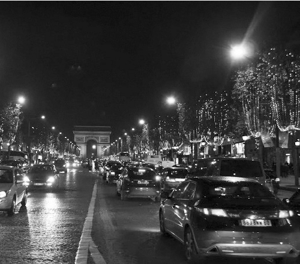

Vậy là bạn đã đi cùng tôi gần hết hành trình rồi nhé! Đã cùng nhau đi ít nhất là một quãng đường, rồi đến ngã rẽ, hoặc có thể đi tiếp chút nữa hoặc mỗi người lại đi một ngả. Có thể, lúc nào đó, đường của bạn lại giao với đường của tôi, lại gặp nhau, lại đi cùng một đoạn, hoặc chỉ kịp nhìn nhau cười một cái, hoặc chẳng bao giờ gặp lại nữa. Đôi khi cũng tùy vào duyên số hay định mệnh, nếu bạn tin vậy, nhưng nếu tôi không nhầm thì bạn luôn có thể tự mình chọn lựa và quyết định. Giống như cuốn sách nhỏ này, bạn có thể tình cờ nhìn thấy trên một giá sách nào đó, hoặc ai đó vô tình làm rơi xuống chân bạn, hoặc bạn bè giới thiệu hoặc là tôi gửi cho bạn với lời đề tặng chân thành.
Dù thế nào đi nữa, bạn cũng có quyền lựa chọn và quyết định. Cầm nó hay không cầm nó, cầm rồi thì đọc hay không đọc, đọc rồi thì đọc tiếp hay cất vào một góc. Bạn chỉ không có quyền lựa chọn nếu như tôi không quyết định viết nó ra và xuất bản nó. Bởi vì tôi đã từng có lựa chọn: viết hay không viết, xuất bản hay không xuất bản, và rồi tôi đã quyết định. Cuộc sống, suy cho cùng, là một chuỗi những lựa chọn, quyết định như thế. Khi có lựa chọn thì ta phải quyết định, quyết định này lại đưa đến những lựa chọn khác, quyết định của người này lại đưa đến lựa chọn cho người khác… Cuộc sống của mỗi người cũng giống như một dòng sông, một con đường: có bắt đầu, có kết thúc, có những ngã rẽ, có những vòng cua (có khi rất gấp, ngoặt hẳn đi một hướng khác, thậm chí quay ngược lại) nhưng thường thì ai cũng mải miết tiến lên. Có lúc bạn lùi, có lúc bạn rẽ, mỗi người một tốc độ nhanh chậm khác nhau. Có vẻ như, chỉ có cái kết là ta ít khi chọn lựa hoặc quyết định được theo ý mình.
Bỗng dưng muốn… viết.
Thật ra tôi đã bắt đầu viết những dòng đầu tiên của cuốn sách này từ lâu lắm rồi. Tôi không lựa chọn, đắn đo “Viết hay không viết?” Chỉ đơn giản, một ngày tôi bỗng muốn viết vài điều về Paris, về cuộc sống, về tôi. Vậy là tôi viết. Tôi viết lung tung, dang dở, mỗi nơi một chút, không có cấu trúc trình tự nào cả. Tôi chỉ nghĩ viết cho mình, nghĩ rằng mãi mãi chỉ có tôi đọc, như rất nhiều những thứ khác, những văn, những thơ, những nhạc tôi đã viết ra. Có xuất bản hay không, tôi chưa từng nghĩ đến.
Nhưng đến một ngày về thăm Hà Nội, vui mừng vì những đổi thay của Hà Nội, đau đớn vì những mất mát của Hà Nội, trăn trở muốn đóng góp cho Hà Nội, tôi viết cái gì đó tâm huyết lắm, đăng lên facebook có bốn chục người “like”. Thế là “kỷ lục” của tôi rồi, vì tôi ít khi dùng facebook, ít bạn bè trên đó. Họ đều là những người bạn thật sự của tôi. Các bạn của tôi, cũng như tôi, không dành nhiều thời gian cho “mạng xã hội” mà không thật sự thể hiện đúng xã hội ấy. Tôi chợt nghĩ rằng giá như nhiều người đọc những gì mình viết hơn thì có lẽ tôi làm được điều gì đó tích cực hơn cho cuộc sống này.
Hay một ngày tôi viết một bài thơ, chị tôi tình cờ đọc rồi bảo “Mình không ngờ em trai mình lại văn thơ lai láng như thế đâu nhé!” Tôi giật mình. Chị em thân nhau đến thế, tuy 15 năm gần đây xa cách về địa lý nhưng chẳng có chuyện gì không nói với nhau, mấy chục năm nay vẫn luôn như thế. Thế mà chị còn chưa biết hết về tôi, về tính cách, sở thích của tôi. Tôi chợt nhớ đến những bài thơ tôi viết tặng mẹ, tặng ba mà ba mẹ tôi chưa bao giờ được đọc, chợt nghĩ rằng sống tình cảm mà không thể hiện ra thì uổng phí tình cảm, có tình cảm mà chỉ thể hiện qua ánh mắt cử chỉ, không viết ra, nói ra thì đôi khi cũng là không đủ. Sống mà người thân của mình còn không biết hết về mình có lẽ là sống chưa hết mình.
Còn một người nữa mà tôi phải đặc biệt cảm ơn, nếu như cuốn sách này đến tay bạn, là bố vợ tôi. Ông là người sống phúc hậu, lành mạnh, chăm chỉ làm việc, giúp đỡ mọi người, cả đời cặm cụi lo cho gia đình, cho con, cho cháu. Tôi có may mắn được sống cùng với bố mẹ vợ nhiều, vì vợ chồng tôi từ khi định cư ở Pháp, năm nào bố mẹ vợ tôi cũng sang ở với chúng tôi ít thì ba tháng, lâu thì nửa năm. Lúc là sang thăm, giúp đỡ chúng tôi, khi thì là nghỉ ngơi, đi du lịch nhưng lúc nào ông cũng thế. Lúc nào cũng là tấm gương nhân hậu, chăm chỉ lao động, hết mình với mọi người để chúng tôi soi vào.
Thế mà thật đột ngột, ông mất. Ông mất khi mới 70 tuổi, trước đó không bệnh tật, ốm đau, không tai nạn. Ông mất vì căn bệnh ung thư máu, mất nhanh đến nỗi vừa nghe tin ông vào viện, chúng tôi đã đặt vé máy bay ngay trong đêm, để sáng lên máy bay quay về, vậy mà về không kịp. Giống như Trịnh Công Sơn từng viết “Sống thì có hẹn hò hôm nay, ngày mai. Chết thì chẳng bao giờ có cuộc hẹn hò nào trước.” Ông mất thanh thản, nhẹ nhàng như người đi ngủ rồi không dậy nữa. Nhưng tôi biết ông còn rất nhiều điều muốn nói, muốn chia sẻ với vợ, với các con, các cháu mà không kịp. Bao nhiêu năm, ông dạy bảo tôi nhiều thứ, những lẽ sống, những cách cư xử ở đời, lúc mất, cái chết của ông dạy tôi thêm ít nhất một điều: “Những lời yêu thương chân thành ấy, nếu còn chưa nói, hôm nay hãy nói đi, đừng để mai, có khi không kịp. Những dự án, những công việc ta đã bắt đầu hay chỉ vừa có ý tưởng, nếu thấy có ích, nếu lòng ta thấy có ý nghĩa, dù chỉ với một người, hãy làm đi, làm ngay bây giờ, lát nữa có lẽ đã là quá muộn.”
Và tôi nghĩ đến ba mẹ tôi, những người đã cho tôi cuộc sống, dạy dỗ tôi thành người. Ba mẹ sẽ khó hình dung hết được tình yêu và sự kính trọng của tôi dành cho họ và tôi sẽ khó kể hết bằng lời cuộc hành trình của mình cũng như nỗi trăn trở của một người con vẫn luôn ôm trong lòng lời hứa “Ba mẹ ơi, rồi con sẽ chiến thắng trở về.”
Và thế là tôi viết, viết như chưa từng được viết, vừa làm việc công ty vừa viết, vừa nấu cơm, trông con vừa viết, vừa ngủ vừa viết, viết nốt những gì còn dang dở, viết luôn những gì vừa ập đến trong đầu. Trong một tháng tôi viết hơn ba trăm trang. Viết rồi sửa, sửa rồi lại viết tiếp. Viết để hoàn thành một công việc mà tôi nghĩ rằng nên làm, để có thể chia sẻ với bạn chút kiến thức, kinh nghiệm hạn chế, có thể với cả những nhầm lẫn sai sót, viết để chia sẻ những suy nghĩ có thể là nông hẹp của tôi. Viết để các lứa du học sinh sau này có thể thêm vào hành trang của mình vài lời khuyên bổ ích, hay chỉ đơn giản là sự đồng cảm của một kẻ xa quê.
Nhiều người có thể đồng tình, có thể phản đối, có thể lãnh đạm, nhưng ít nhất sẽ có ai đó cảm nhận được chút gì tích cực, rút ra được cho mình một lời khuyên, để sống đẹp hơn, có ích hơn. Viết để tri ân những tấm chân tình cả đời tôi đáp lại cũng không đủ, viết để dù sau này không ai còn muốn nhắc đến cuốn sách này, con cháu tôi có thể đọc nó mà nói với nhau rằng “cha ông ta đã từng sống như thế, từng nghĩ như thế”.
Trở lại điểm khởi đầu.
Tôi đã bắt đầu câu chuyện này ở Khải Hoàn Môn, cổng chào chiến thắng của người Pháp, nhưng lúc ấy tôi chưa chiến thắng gì cả (bây giờ cũng thế), tôi chỉ vừa mới bắt đầu một chặng đường, một quãng đường của cuộc đời tôi. Cũng như Khải Hoàn Môn là sự khởi đầu cho đại lộ Champs Elysée, đại lộ được coi là đẹp, là lộng lẫy nhất châu Âu, nhất thế giới, nhưng cũng đơn giản là một đoạn đường như trăm ngàn đoạn đường khác.

Đại lộ Champs Elysées luôn náo nhiệt. (Ảnh: Tác giả)
Đại lộ luôn sáng rực cả ngày lẫn đêm bởi các quán cà phê, cửa hàng, các phòng trưng bày, nơi bạn “muốn mua gì cũng có” như nhiều người Paris tự hào. Đại lộ của cuộc duyệt binh mỗi năm vào ngày quốc khánh, những đoàn người xe, bắt đầu từ phía Khải Hoàn Môn xuống đến quảng trường Concorde (sát vườn Tuileries), của những đêm hội mừng chiến thắng của bất kỳ đoàn quân nào chiến thắng trở về. Đại lộ của tình yêu, của những mối tình lãng mạn đêm Valentin, hay của lung linh mỗi năm hàng trăm ngàn ngọn đèn trang trí và thắp sáng mừng Noel và năm mới từ đầu tháng Mười hai đến giữa tháng Một năm sau.
Đại lộ của “thế giới ẩm thực”, của những nhà hàng sang trọng mở thâu đêm, nơi có những “quý ông, quý bà” tiệc tùng và có cả những “quý ông, quý bà” say sưa làm việc, phục vụ.
Đại lộ thơ mộng trên “bờ phải” của Paris, chạy song song với dòng sông Seine thơ mộng. Đại lộ của những tòa nhà là trung tâm bán hàng cho các hãng nổi tiếng, như Chanel, Louis Vuitton, nơi hàng đoàn người mà trong số đó hơn 2/3 là người châu Á nhẫn nại xếp hàng, trong số ấy có vô khối những người không thể có khả năng mua cho họ một cái túi vài ngàn đô-la, chỉ xếp hàng thuê kiếm vài đồng bạc lẻ, và trong khi xếp hàng đã có thể kịp thì thầm “Mẹ ơi, Tết này con không về”. Đại lộ mà từ đó, ở mỗi góc phố khuất nhà, bạn có thể nhìn thấy “khối sắt” Eiffel hùng vĩ, kiêu hãnh và rất có hồn. Đại lộ mà mỗi người khách du lịch lần đầu đặt chân đến, có tôn giáo hay không theo tôn giáo, có đi nhà thờ hay không đi nhà thờ, đều cảm thấy như là “cơ duyên” trời định, đều thầm cảm ơn “số phận” của mình (trừ một người, ít nhất là một người). Đại lộ rộng lớn và kéo dài, tấp nập không chỉ bên trên mà bên dưới lòng đất là rất nhiều ga tàu, đường tàu qua lại giao nhau nhằng nhịt, nơi mà những cuộc đời vội vã hay tĩnh lặng, bắt đầu hay kết thúc một chuyến đi, một cuộc hành trình và rất nhiều thứ khác.
Và một câu chuyện nhỏ cuối cùng.
Có một câu chuyện nữa tôi còn chưa kể với bạn, cũng là một kỷ niệm khó quên của tôi với đại lộ Chams Elysées. Hôm ấy, mới chỉ vài ngày sau khi tôi gặp em lần đầu, dù bị “sét đánh” cháy khét, tôi với em vẫn chỉ là hai người bạn mới gặp. Đêm ấy là tết Tây, ban nhạc chúng tôi tổ chức đêm nhạc sinh viên trong Đại sứ quán Việt Nam, tất nhiên tôi mời em tới dự. Kết thúc buổi diễn đã muộn lắm, quá nửa đêm, nghĩ sẽ không còn kịp tàu để về nhà tôi (ở ngoại ô), cả nhóm định lên tàu điện ngầm đi về nhà một anh bạn trong nhóm, gần trung tâm để ngủ tạm. Trên tàu vắng người, còn chúng tôi đang lâng lâng vì chút rượu năm mới uống sau đêm diễn, cao hứng, chúng tôi chơi đàn guitar và hát ngay trên tàu điện ngầm, át cả tiếng tàu chạy, phải nói là lúc ấy chúng tôi cao hứng lắm. Dân chúng hò reo cổ vũ nhiệt tình. Tôi vừa hát vừa nhìn em, cảm hứng dâng trào không cầm được lòng mình, tôi nắm lấy tay em, thật chặt, thấy đôi mắt em vừa ngượng nghịu bẽn lén vừa ánh lên nét tự hào. Tàu đi qua ngay dưới đường Champs Elysées, gần Khải Hoàn Môn. Chúng tôi không hề biết lúc ấy, ở ngay phía trên, vừa có bắn pháo hoa và hàng triệu người tập trung trên đường để xem. Pháo hoa xong thì đột ngột trời mưa to như có bão. Bao nhiêu con người ấy hốt hoảng, ai cũng chạy xuống tàu điện ngầm, thành ra chen lấn xô đẩy nhau, cảnh tượng hết sức hỗn loạn. Nhưng chúng tôi chưa biết, vẫn còn đang đàn hát say sưa. Tàu vào bến, chưa ai kịp nói câu nào đã tràn vào cơ man nào là người. Phần lớn do sợ hãi, hoảng hốt, nhiều đám trẻ quậy phá nhân cơ hội đó kích động, đập phá, dẫm đạp. Tôi chỉ kịp hô mọi người cẩn thận, đứng dồn vào một góc tàu, ba cô gái cho đứng vào trong còn ba gã trai chúng tôi tạo thành một vòng tròn che chắn. Nhưng chắn không nổi, cả trăm cả ngàn người xô đẩy, chèn ép. Lũ thanh niên phá phách thấy chúng tôi thấp bé mà đòi “ga lăng” nên ngứa mắt, chúng nhảy đè cả lên vai, lên lưng chúng tôi. Tôi khỏe còn chịu được, hai cậu kia đuối dần, đến một lúc nào đó thấy không thể trụ thêm được nữa, tôi quyết định phải thoát ra khỏi toa tàu, thà đi bộ về dưới mưa còn hơn chết ngạt. Tôi bảo cả hội, rồi bắt đầu đi giật lùi, lấy sức của mình mà xô đám kia ra, hai tay ôm theo em, mở đường cho cả nhóm xông ra ngoài. Lũ thanh niên kia, có lẽ tức giận vì bị tôi xô ra, mượn tình hình để phá đám, thi nhau đạp lên tay, lên lưng tôi và cả em nữa. Một khoảnh khắc, tôi kéo nhanh quá, em bị trượt chân, ngã xuống. Giữa đám người xô lấn, tay em tuột ra khỏi tay tôi, tôi chỉ nhìn thấy đôi mắt em, nhìn tôi cầu cứu, hốt hoảng cực độ. Rồi đám người ào lên.
Tôi gầm lên một tiếng, có lẽ đời tôi chưa bao giờ gầm to đến thế, bình thường tôi hét đã to lắm, át cả tiếng loa đài, đi diễn đi hát nhiều khi không cần micro, nhưng lúc ấy tôi gầm lên, có lẽ sư tử gầm cũng chỉ đến thế thôi. Tôi gạt đám người ra, xốc em đứng dậy, chẳng biết bằng cách nào lôi được em và cả nhóm ra ngoài. Lũ thanh niên kia còn lao theo ra chửi bới đòi đánh chúng tôi. Tôi đẩy cả nhóm sang một bên rồi giật cây đàn trên tay cậu em, quay lại nói một câu: “Đứa nào xuống đây, xuống luôn một lượt, tao tiếp hết”. Tôi vẫn còn nhớ cả nhà ga náo loạn lúc ấy bỗng nhiên câm bặt. Hình ảnh một gã trai châu Á nhỏ bé đứng thách thức cả toa tàu đầy một đám côn đồ kia có lẽ ấn tượng quá làm tất cả phải lặng im. Không có đứa nào dám xuống, tôi nhìn vào mặt đứa nào, đứa ấy cũng xua tay “Xin lỗi, xin lỗi”. Chúng tôi lên phố, Champs Elysées đã vắng người, mưa không quá to nữa. Chúng tôi lặng lẽ di dưới mưa. Tôi nắm tay em, yên lặng, thanh bình như chưa có chuyện gì xảy ra. Chỉ hỏi “Ngã có đau không, có sợ không?” Em cười, lại nhìn tôi bằng ánh mắt vừa bẽn lẽn, vừa tự hào, em bảo “Sợ chứ. Tớ sợ người ta thì ít, sợ ấy thì nhiều. Người đâu mà năm phút trước là nghệ sĩ, năm phút sau chẳng khác gì Gladiator, hét gì mà to thế.” Khoảnh khắc ấy có lẽ giúp em biết thêm một chút về tôi, rằng tôi là người như thế, bao giờ cũng hết mình cả. Khi cần là nghệ sĩ, tôi sẽ là nghệ sĩ, nếu cần là chiến binh, phải lao vào lửa, phải cầm dao cứa vào thân mình, tôi sẽ làm, không phải chỉ vì em, vì bất cứ người bạn, người thân nào hay bất kỳ ai nếu người đó cần, nếu tôi thấy cần. Có phải vì thế mà em cảm phục hay rung động, để đêm sau nhận lời yêu tôi hay không, tôi không biết, chỉ biết rằng mỗi khi trở lại nơi này, bao giờ tôi cũng nhớ đến ánh mắt em.
Để nói lời kết.
Và bao giờ cũng thế, tôi đến bến tàu ở chân Khải Hoàn Môn bắt đầu cuộc đi dạo. Cứ mỗi đoạn tôi lại dừng chân ở một điểm nào đó thân quen, một điểm nào đó đã lưu dấu trong cuộc hành trình của tôi. Có cảm giác như con đường này chính là cuộc đời, không, một phần đời mình, từ ngày tôi đặt chân đến Paris. Bởi ở đó, đầu đường là nơi chàng sinh viên 23 tuổi nhễ nhại mồ hôi, hành lý trĩu nặng trên vai và một lời hẹn ước trong tim, bắt đầu cuộc phiêu lưu không hồi kết. Đi thêm chừng 200 mét, tôi lại thấy đôi tình nhân, chỉ mấy ngày trước còn chưa biết mặt nhau, đang đi dạo phố, bỗng dừng lại trao nhau một nụ hôn nồng cháy và thì thầm những lời hẹn ước trong một đêm sau tết Tây, đèn trang trí của đại lộ vẫn còn thắp lung linh trên các ngọn cây. Đi đoạn nữa, đến vòng xoay Rond Point des Champs Elysées, ở đúng một nửa chiều dài của con đường Champs Elysées, nơi có một nhà hàng sang trọng. Đúng chỗ ấy, 10 năm trước tôi làm batender và cả runner cho nhà hàng ấy. Mỗi đêm kết thúc công việc lúc ba giờ rưỡi sáng, nhảy vội lên roller phóng như điên mong kịp chuyến bus cuối. Nếu không kịp, tôi sẽ đi roller hơn 15 cây số về nhà mình ở ngoại ô phía Nam. 10 năm sau, tức là bây giờ, tôi làm quản lý tài chính cho một công ty có trụ sở cũng ở đúng vòng xoay ấy, mỗi ngày đi làm lại đứng tần ngần, tưởng chừng như vẫn nhìn thấy trong đêm chàng thanh niên lao mình trên đôi roller kia, tự hỏi mình làm thế nào mà có đủ năng lượng để làm những điều ấy? Rồi tự trả lời: Nhờ có những niềm say mê, có những bến bờ, có một quyết tâm và những niềm tin. 10 năm trước đã thế, bây giờ vẫn thế và sau này sẽ mãi như thế. Bởi con đường còn chưa hết, ta mới đi một nửa. Bởi cuộc sống không bao giờ dừng lại, cứ cuồn cuộn chảy như những con sông... Mỗi khi đi dạo trên con đường này, bao giờ tôi cũng lẩm nhẩm hát một bài hát mà bất cứ người Paris nào cũng biết, bài hát vui nhộn của Joe Dassin về chính con đường Champs Elysées. Không hiểu sao, lời bài hát lại có nhiều trùng hợp đến thế với chuyện của tôi, với những điều mà tôi muốn nói với bạn. Tôi dịch tạm lời bài hát cho bạn thử đọc xem nhé:
“Tôi dạo trên phố, và mở tim mình ra với mọi người, dù chẳng quen biết
Tôi muốn cất lời chào và chúc ngày mới tốt lành đến bất kỳ ai
Con người bất kỳ ấy thế nào lại chính là em, và tôi đã nói với em lung tung điều gì thế
Thật ra thì chỉ cần nói với em là đủ, nói với em rằng:
“Trên đại lộ Champs Elysées, trên con đường ấy
Lúc nắng khi mưa, ngày cũng như đêm
Có đủ mọi thứ mà mọi người mong muốn, ở Champs Elysées.”
Em nói với tôi “Em có hẹn dưới những ga ngầm dưới lòng đất, với những người say mê…
Sống với cây đàn guitar trên tay, từ sáng đến tối”
Thế là tôi đưa em đi, và ta hát, ta nhảy cùng nhau
Rồi thậm chí chẳng nghĩ ngợi gì, ta đã hôn nhau.
Hôm qua là hai kẻ không quen biết, và sáng nay trên con phố ấy
Hai người yêu nhau vừa ngất ngây suốt một đêm
Từ vòng xoay Etoile đến quảng trường Concorde, một dàn nhạc với ngàn thanh âm
Và tất cả những con chim vừa bừng tỉnh dậy với ngày mới đều hát những lời tình yêu.”
Vừa hát, tôi vừa mỉm cười và bước đi trên con đường của (một phần) đời tôi…
Paris, ngày 13 tháng Hai năm 2015
Hoàng Long.
Chú thích
[1]. Một hypocrite là một người giả vờ có tín ngưỡng, đạo đức hoặc ý kiến, nhưng thực chất không có những điều đó. Hoặc tỏ ra, làm điều gì đó cao đẹp nhưng trái với lòng mình.
[2]. Ở Pháp nói riêng và các nước châu Âu nói chung, từ tháng Mười một đến tháng Ba năm sau, đồng hồ sẽ được điều chỉnh chậm hơn một giờ so với giờ mùa hè. Và vì thế vào mùa đông, giờ Paris lệch sáu giờ so với Hà Nội.
[3]. Ở Pháp, thường ngay từ năm thứ hai đại học sinh viên đã được nhà trường cấp một bản Convention de stage (có thể hiểu là Hợp đồng thực tập, là sự cam kết trách nhiệm, quyền lợi giữa ba bên: nhà trường, sinh viên và công ty) vào cuối mỗi năm học để sinh viên liên hệ với các nhà tuyển dụng xin đi thực tập. Lên bậc cao học, một khóa học viên thường chỉ được cấp một lần bản Convention de stage đó. Trong vòng 6 tháng, nếu sinh viên hoặc học viên cao học đó không được nơi nào nhận về thực tập thì cũng không thể kéo dài thời hạn hoặc xin một bản Convention mới..